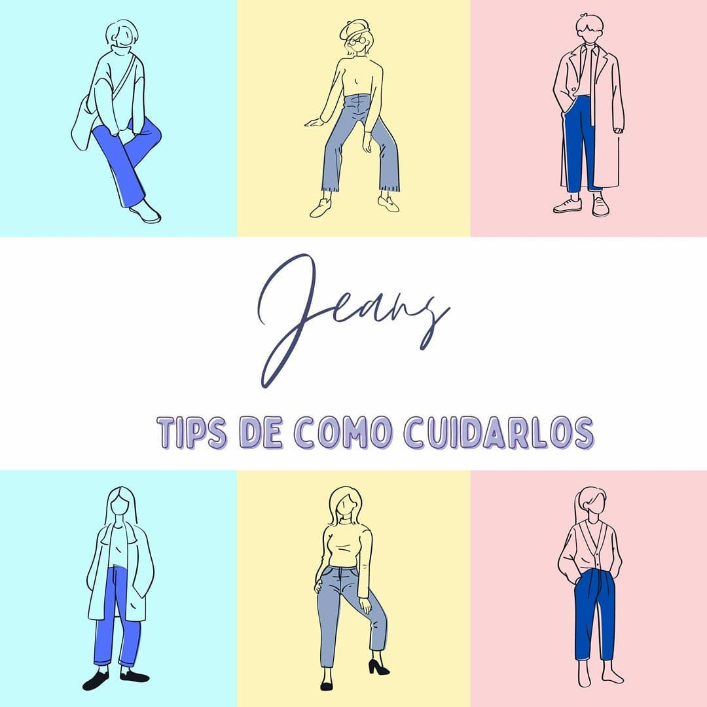

¿Cómo hacer que tus jeans duren más tiempo?
Primero ¿Qué tipos de jeans hay?👖
Están los jeans prelavados son los que, antes de llegar a las tiendas, han sido tratados a través de unos métodos para definir sus diseños. Son técnicas como los stonewashes, el arenado o el raspado. Todos ellos les dan un aire “desgastado”. Por otro lado, tenemos también los jeans “sin lavar” (no significa que venga sucio). Están fabricados con una tela más fuerte y resistente. Duran más, pero no resultan tan cómodos como los anteriores porque son algo más rígidos.
¿Cómo lavar los jeans?
1. Mejor al revés
Para cuidar de la durabilidad de nuestros jeans es conveniente que, antes de meterlos al lavarropas, les cerremos los cierres o los botones y les demos la vuelta. De ese modo protegemos la cara exterior del pantalón. No podemos pasar por alto que todo lavado, de una forma u otra, va ser algo abrasivo para la tela. Las otras piezas de ropa chocarán contra ellos, y tampoco podemos olvidar que, en ocasiones, los propios cierres y botones pueden dañar el color y la tela. ¡Mejor al revés!
2. No los laves con agua caliente
El agua caliente lo que consigue es que el tejido quede desinfectado. Pero, a su vez, el color se desvanece e incluso el propio pantalón puede achicarse. Mejor agua fría.
3. ¿Qué jabón debo usar?
Los fabricantes recomiendan el uso del jabón líquido. Ahora bien, existe un truco muy efectivo que, además de ser práctico, es económico. Se trata del vinagre blanco. Para ello, solo tendrás que añadir unos 150 ml de vinagre blanco en la carga de tu lavarropas.
4. No trates de limpiar manchas localizadas
Es un riesgo poco conveniente. Con ello lo que conseguimos muchas veces es dañar la tela y el color. En caso de que tengas manchas muy rebeldes, puedes lavarlos entonces con temperaturas un poco más tibias en el lavarropas. Pero no hagas experimentos.
5. Cuelga tus jeans de inmediato para que se sequen
Cuando el lavarropas haya terminado sus ciclos, es necesario tender de inmediato nuestros jeans. De no hacerlo, pueden arrugarse, y las arrugas en estos tejidos tardan mucho en desaparecer (sobre todo en jeans rigidos).
✨Esperamos que les sirva✨
